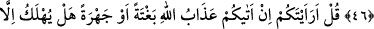
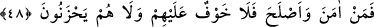
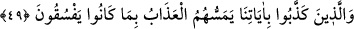

NİMETLER VE PEYGAMBER
GÖNDERİLMESİNİN HİKMETİ
46. De ki: Ne dersiniz; eğer Allah kulaklarınızı sağır, gözlerinizi kör eder,
kalplerinizi de mühürlerse bunları size Allah’tan başka hangi tanrı geri verebilir!
Bak, delilleri nasıl açıklıyoruz. Onlar hâla yüz çeviriyorlar!
47. De ki: Söyler misiniz; size Allah’ın azabı ansızın veya açıkça gelirse, zalim
toplumdan başkası mı helâk olur?
48. Biz, peygamberleri ancak müjdeleyiciler ve uyarıcılar olarak göndeririz. Kim
îman eder ve kendini düzeltirse onlara korku yoktur. Onlar üzüntü de
çekmeyecekler.
49. Âyetlerimizi yalanlayanlara gelince, yoldan çıkmalarından dolayı onlar azap
çekeceklerdir.
Ey Muhammed! Mekke halkına “de ki:” Ey müşrikler! “Söyleyin bana,” haber verin,
“eğer Allah işitme duyunuzu ve gözlerinizi alsa” kulaklarınızı sağır, gözlerinizi kör
etse, “kalplerinizin üstüne de mühür vursa,” aklınızı ve anlayışınızı yok edecek
şeylerle örtse ve deli olsanız “Allah’tan başka bunları size getirip verecek tanrı
kimdir?”
Yani, Allah sizin en kıymetli organlarınızı alacak olsa Allah’dan başka kim onları size
geri verebilir? Mâlumdur ki noksanlıklardan münezzeh olan Allah’dan başkası buna güç
yetiremez. İbâdet ve tâzime layık olan yalnız O’dur.
Ey Muhammed! “Bak!” ve ibret al “nasıl âyetleri döndürüp türlü türlü açıklıyoruz,”
bazan aklî deliller ileri sürerek, bazan teşvik ve korkutma yoluyla, bazan öncekilerin
hallerine dikkat çekerek ve hatırlatarak bir üsluptan diğer bir üslûba geçerek nasıl
tekrarlıyor ve açıklıyoruz.
Haddâdî der ki: “”: “Çevirmek”, mânâyı en iyi ortaya koyacak yönlere
yöneltip ifade etmektir.